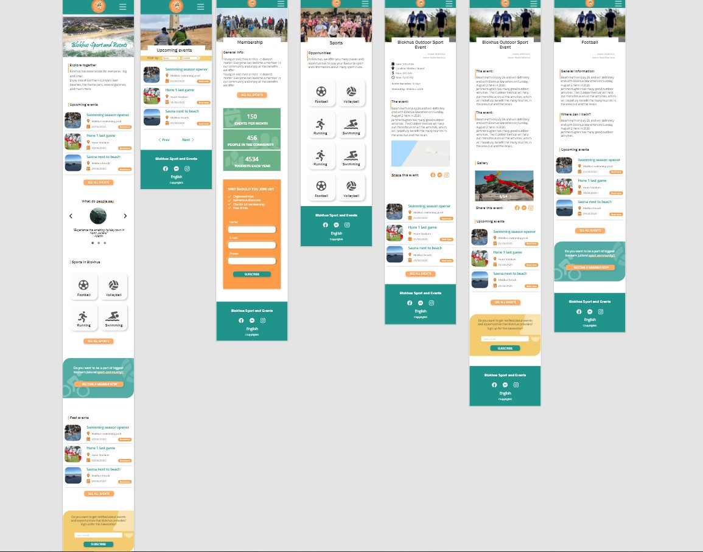
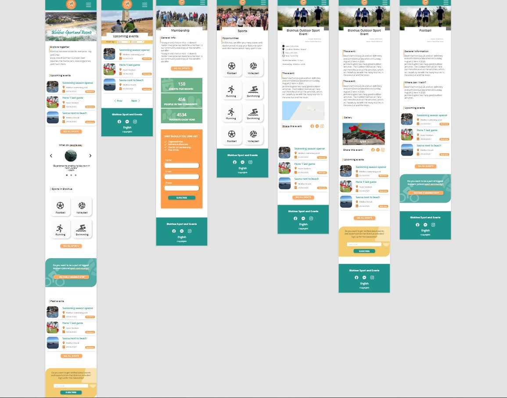
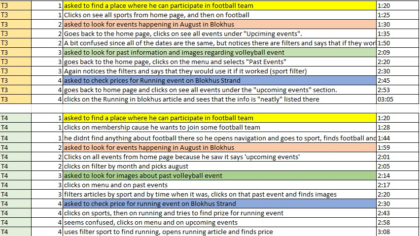
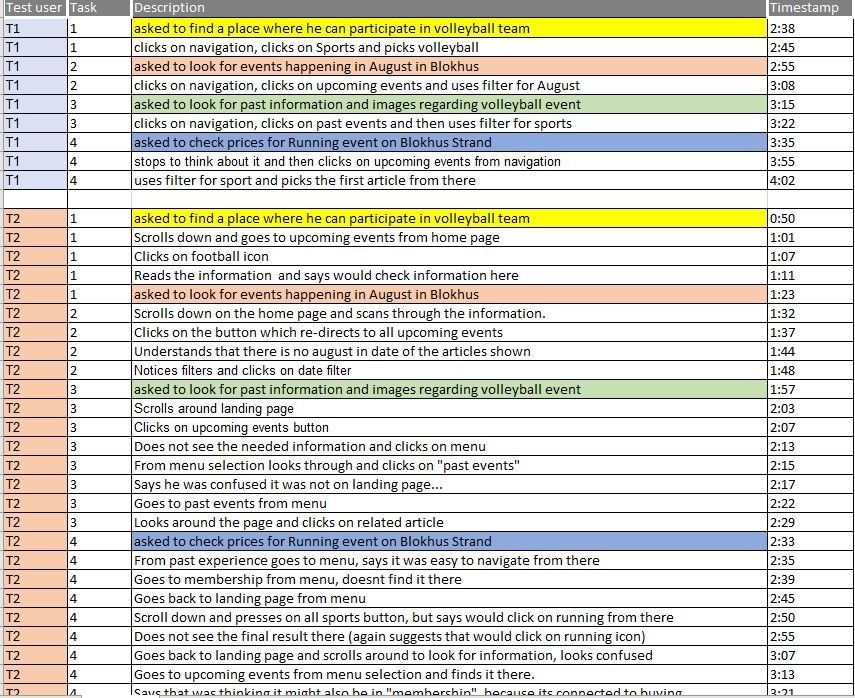

Blokhus Sport and Events
Client: Blokhus Sport and Events
My role: UX/UI Research, Design
Go and see the final version Check out ReportProblem:
The main issue that Blokhus Sport and Events community is facing, is that all the information for different sports and events is spread out on Facebook pages which makes it difficult to get an overview for the potential visitors of Blokhus. Another limitation that Blokhus Sport and Events is facing is that the only way the people can inform themselves for past events is from the local newspaper. Blokhus Sport and Events is exploring possibilities of attracting new members by creating the membership status with which you can participate in multiple sports and events that are cost-friendly and with more benefits.
_________________________________USER RESEARCH
In order to create the desired user experienced, me and my group performed detailed user research by conducting qualitative interviews and gather quantitative data. After we had enough data to work with, we coded our interviews and worked with Empathy Maps so that we can understand our user's needs


______________________PROTOTYPING
During the process of creating the design of the product, me and my group used prototyping as development method for the current project. We went through 3 iterations and approached mobile-first design.
 

____________________USER TESTING
In the end of each iteration from the prototyping cycle, different user testing was performed such as Think-aloud Test and 5 Second Test and their results have been precisely analyzed and taken into account.
 